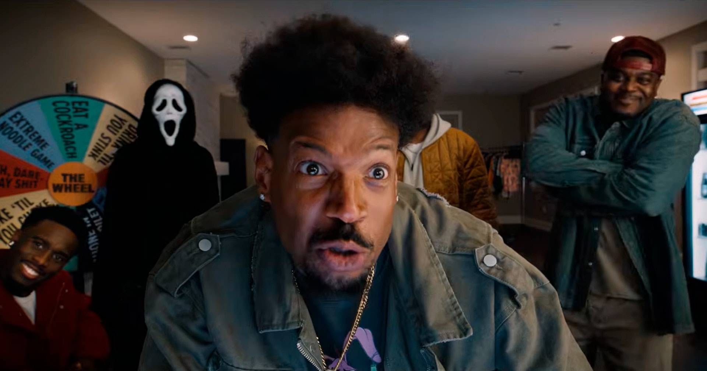
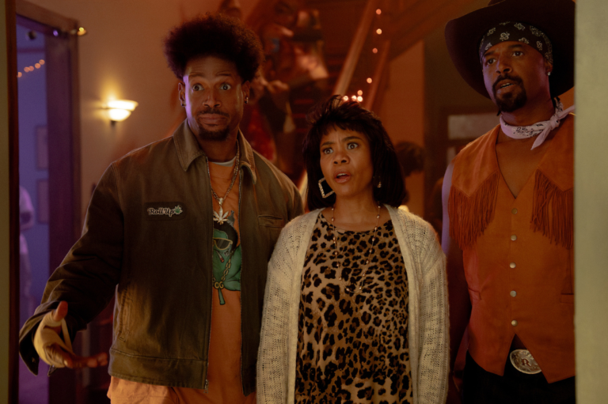
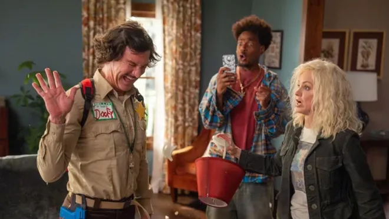
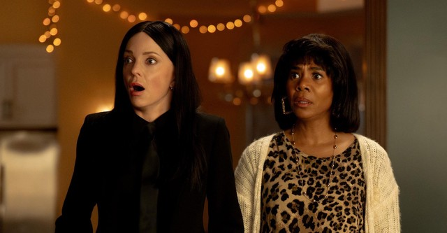

Bem, é Todo Mundo em Pânico. Não tem muito mistério aqui. Em teoria eu poderia gastar este texto inteiro falando sobre o filme, mas provavelmente seria mais produtivo gastar esse tempo rindo dele. Afinal, é para isso que a franquia existe. Como era de se esperar, o filme é uma verdadeira metralhadora de piadas. Algumas passam direto pelo alvo, outras acertam em cheio e arrancam risadas genuínas. A boa notícia é que, na maior parte do tempo, a pontaria está bem calibrada.

O longa pega emprestada a estrutura de outro filme, algo que já fica bem claro nos materiais promocionais e se torna ainda mais evidente conforme a história avança. E isso acaba ajudando bastante. Em vez de apenas jogar referências aleatórias na tela, existe uma base narrativa que serve como desculpa para encaixar as piadas, os personagens e as inúmeras sátiras que aparecem durante a sessão.
E quando digo inúmeras, são realmente muitas. O filme faz piada com cinema, televisão, celebridades, acontecimentos recentes e praticamente qualquer assunto que tenha rendido conversa nos últimos anos. Algumas referências são tão atuais que provavelmente vão envelhecer rápido, mas funcionam muito bem no momento. Outras são comentários sobre situações e discussões dos Estados Unidos que, por trás do exagero característico da franquia, acabam até funcionando como uma crítica social disfarçada.



Outra coisa legal é ver os personagens clássicos de volta. Eles dividem espaço com uma nova geração, mas vamos ser sinceros: quando alguém da velha guarda aparece em cena, é difícil não prestar mais atenção nele do que nos protagonistas novos. Não que os novatos sejam ruins, mas existe um carinho natural pelos personagens que acompanharam a franquia desde o começo.
Também não quero entrar muito em detalhes porque boa parte da graça está justamente em ser pego de surpresa. Tem piadas que funcionam melhor quando você não faz ideia de que estão chegando. Então quanto menos spoilers, melhor.
"Diferente de alguns dos capítulos da franquia, este filme não parece apenas uma coleção de referências jogadas na tela, ele é uma uma coleção de referências jogadas na tela ,só que agora existe uma história guiando a bagunça, e isso faz uma boa diferença."
Uma coisa que gostei foi perceber que o filme tenta contar uma história de verdade. Sim, ainda é um festival de referências e besteirol, mas agora existe uma linha de acontecimentos ligando tudo isso. Diferente de alguns capítulos mais recentes, que pareciam apenas um compilado de esquetes, aqui as piadas costumam surgir de situações que fazem sentido dentro da própria trama.
No final, Todo Mundo em Pânico não tenta ser mais inteligente do que precisa. Ele sabe exatamente o que é, sabe o que o público espera e entrega isso sem vergonha nenhuma. Algumas piadas vão funcionar melhor que outras, mas quando as luzes da sala acendem, a sensação é de que valeu a pena embarcar nessa bagunça. Então sim, corra para o cinema, entre em pânico e permita-se apenas rir.
✔ O QUE É BOM
- Grande quantidade de referências que, em sua maioria, funcionam bem.
- Retorno dos personagens clássicos traz muito carisma ao filme.
- Narrativa mais organizada do que a de algumas sequências anteriores.
✖ O QUE NÃO É BOM
- Algumas piadas dependem bastante do conhecimento das referências.
- O humor continua sendo extremamente específico e pode não agradar quem não gosta do estilo da franquia.
Discussão e Opiniões